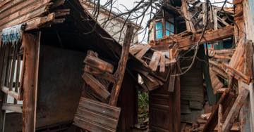

Deprem hakları rehberi
Her başlık kanuni dayanağıyla birlikte anlatılır. Kalıcı mevzuattan doğan haklar ile geçmiş afetlerde uygulanmış geçici destekler ayrı ayrı işaretlenir — bu ayrım, size olmayan bir hak vaat edilmemesi için vardır.
Etiketler ne anlama geliyor?
Her rehberin künyesinde bu iki etiketten biri bulunur.
Kalıcı mevzuat
Kanun, yönetmelik veya genel şarttan doğan, afetten afete değişmeyen haklar.
Geçmiş uygulama
2023 depremlerinde uygulanmış ama kalıcı mevzuat olmayan destekler. Yeni bir afette aynen tekrarlanacağının garantisi yoktur.
Konut ve sigorta
Zorunlu deprem sigortası, konut sigortası, eksper süreci ve teminat açığı.
 DASK neyi karşılar, neyi karşılamaz?
DASK binanızı sigortalar, hayatınızı değil. Ev eşyası, enkaz kaldırma, alternatif konaklama, kira kaybı ve ölüm dâhil bedeni zararlar kapsam dışıdır.
Konut sigortası ve eksik sigorta tuzağı
DASK'ın karşılamadığı eşya, konaklama ve kira kaybı ihtiyari konut sigortasıyla kapatılır. Ancak sigorta bedeli gerçek değerin altındaysa, tam hasarda bile eksik ödeme yapılır.
DASK neyi karşılar, neyi karşılamaz?
DASK binanızı sigortalar, hayatınızı değil. Ev eşyası, enkaz kaldırma, alternatif konaklama, kira kaybı ve ölüm dâhil bedeni zararlar kapsam dışıdır.
Konut sigortası ve eksik sigorta tuzağı
DASK'ın karşılamadığı eşya, konaklama ve kira kaybı ihtiyari konut sigortasıyla kapatılır. Ancak sigorta bedeli gerçek değerin altındaysa, tam hasarda bile eksik ödeme yapılır.
 DASK hasar ihbarı nasıl yapılır? 15 günlük süre, %2 muafiyet ve 72 saat kuralı
Depremden sonra DASK hasar ihbarı için süre 15 gün. İhbar kanalları, eksper süreci, %2 muafiyet ve ödemenin nasıl hesaplandığı.
DASK hasar ihbarı nasıl yapılır? 15 günlük süre, %2 muafiyet ve 72 saat kuralı
Depremden sonra DASK hasar ihbarı için süre 15 gün. İhbar kanalları, eksper süreci, %2 muafiyet ve ödemenin nasıl hesaplandığı.
 Eksper raporu son söz değildir: itiraz, ikinci eksper ve hakem eksper
Sigorta ödemesini az bulanların çoğu doğrudan mahkemeyi düşünüyor. Arada çok daha hızlı üç basamak var: itiraz, ikinci eksper, hakem eksper.
Eksper raporu son söz değildir: itiraz, ikinci eksper ve hakem eksper
Sigorta ödemesini az bulanların çoğu doğrudan mahkemeyi düşünüyor. Arada çok daha hızlı üç basamak var: itiraz, ikinci eksper, hakem eksper.
 DASK'ım yeterli mi? Sigorta bedeli, azami teminat ve eksik sigorta tuzağı
DASK'ın ödeyeceği tutar konutunuzun piyasa değeri değildir. Bedel metrekareyle hesaplanır, azami teminatla sınırlıdır ve muafiyet düşülür.
DASK'ım yeterli mi? Sigorta bedeli, azami teminat ve eksik sigorta tuzağı
DASK'ın ödeyeceği tutar konutunuzun piyasa değeri değildir. Bedel metrekareyle hesaplanır, azami teminatla sınırlıdır ve muafiyet düşülür.
 DASK'ım yoksa ne olur? Asıl kayıp ceza değil, devlet desteğini kaybetmektir
Zorunlu deprem sigortası bulunmayanlara devlet konut yardımı veya kredi ödenmediği belirtilmektedir. DASK'ın asıl karşılığı budur.
DASK'ım yoksa ne olur? Asıl kayıp ceza değil, devlet desteğini kaybetmektir
Zorunlu deprem sigortası bulunmayanlara devlet konut yardımı veya kredi ödenmediği belirtilmektedir. DASK'ın asıl karşılığı budur.
Hasar tespiti ve itiraz
Hasar tespit dereceleri, 30 günlük itiraz, riskli yapı tespiti ve yıkım kararı.
 Depremden sonra ilk 30 gün: hangi hakkın süresi ne zaman doluyor?
Deprem sonrasında kaybedilen hakların çoğu bilinmediği için değil, süresi kaçtığı için kaybediliyor. İşte gün gün yapılması gerekenler.
Depremden sonra ilk 30 gün: hangi hakkın süresi ne zaman doluyor?
Deprem sonrasında kaybedilen hakların çoğu bilinmediği için değil, süresi kaçtığı için kaybediliyor. İşte gün gün yapılması gerekenler.
 Hasar tespit raporuna itiraz nasıl yapılır? 30 günlük süre ve dilekçe
Binanızın hasar derecesi yanlış belirlendiyse itiraz süresi ilan tarihinden itibaren 30 gün. Kaçarsa idari itiraz hakkı tümüyle biter.
Hasar tespit raporuna itiraz nasıl yapılır? 30 günlük süre ve dilekçe
Binanızın hasar derecesi yanlış belirlendiyse itiraz süresi ilan tarihinden itibaren 30 gün. Kaçarsa idari itiraz hakkı tümüyle biter.
 Hasarlı binadan eşya alınabilir mi? Kurallar ve kimsenin söylemediği tuzak
Yıkık ve acil yıktırılacak yapılara girmek yasak. Ağır hasarlı binada eşya alımı ise pratikte 30 günlük itiraz hakkınızla çakışıyor.
Hasarlı binadan eşya alınabilir mi? Kurallar ve kimsenin söylemediği tuzak
Yıkık ve acil yıktırılacak yapılara girmek yasak. Ağır hasarlı binada eşya alımı ise pratikte 30 günlük itiraz hakkınızla çakışıyor.
Deprem öncesi yapı güvenliği
Riskli yapı tespiti, kentsel dönüşüm, imar barışı ve bina yaşının hukuki anlamı.
 Riskli yapı tespiti nasıl yaptırılır? Komşularınızın onayı gerekmiyor
Riskli yapı tespiti için diğer maliklerin onayı gerekmez. Tek bir kat maliki, masrafı kendisine ait olmak üzere tüm binanın tespitini yaptırabilir.
Riskli yapı tespiti nasıl yaptırılır? Komşularınızın onayı gerekmiyor
Riskli yapı tespiti için diğer maliklerin onayı gerekmez. Tek bir kat maliki, masrafı kendisine ait olmak üzere tüm binanın tespitini yaptırabilir.
 İmar barışı ve Yapı Kayıt Belgesi: binanız yasallaştı ama güvenli olmadı
Yapı Kayıt Belgesi, binanın depreme dayanıklı olduğunu göstermez ve maliki sorumluluktan kurtarmaz. Sorumluluk açıkça malike bırakılmıştır.
İmar barışı ve Yapı Kayıt Belgesi: binanız yasallaştı ama güvenli olmadı
Yapı Kayıt Belgesi, binanın depreme dayanıklı olduğunu göstermez ve maliki sorumluluktan kurtarmaz. Sorumluluk açıkça malike bırakılmıştır.
 Binanız hangi deprem yönetmeliği döneminde yapıldı? Belgeleri nasıl alırsınız?
Bina yaşı, dayanıklılık hakkında kaba ama anlamlı bir göstergedir. Ruhsat, iskân ve zemin etüdü raporu bilgi edinme yoluyla istenebilir.
Binanız hangi deprem yönetmeliği döneminde yapıldı? Belgeleri nasıl alırsınız?
Bina yaşı, dayanıklılık hakkında kaba ama anlamlı bir göstergedir. Ruhsat, iskân ve zemin etüdü raporu bilgi edinme yoluyla istenebilir.
Devlet destekleri
Hak sahipliği, afet konutu, kira ve taşınma yardımı, AFAD destekleri.
 Hak sahipliği başvurusu: iki aylık süre, taahhütname ve faizsiz borçlandırma
Binası yıkılan veya ağır hasarlı malikler devletten konut ya da faizsiz kredi isteyebilir. Başvuru süresi ilan tarihinden itibaren iki aydır.
Hak sahipliği başvurusu: iki aylık süre, taahhütname ve faizsiz borçlandırma
Binası yıkılan veya ağır hasarlı malikler devletten konut ya da faizsiz kredi isteyebilir. Başvuru süresi ilan tarihinden itibaren iki aydır.
 Afet konutu bedava değildir: borçlandırma koşullarını başvurmadan önce bilin
Hak sahipliği kabul edilen kişiye verilen konut karşılıksız değildir. Geri ödeme en az 20 yıl, faizsiz ve eşit taksitlidir; ilk taksit teslimden iki yıl sonra başlar.
Afet konutu bedava değildir: borçlandırma koşullarını başvurmadan önce bilin
Hak sahipliği kabul edilen kişiye verilen konut karşılıksız değildir. Geri ödeme en az 20 yıl, faizsiz ve eşit taksitlidir; ilk taksit teslimden iki yıl sonra başlar.
 Kira yardımı ve taşınma yardımı: kim alır, ne kadar sürer?
Kira yardımının iki ayrı kaynağı var: afete özgü AFAD kararları ve kentsel dönüşüm mevzuatındaki kalıcı kira yardımı. İkincisinde kiracı da taraftır.
Kira yardımı ve taşınma yardımı: kim alır, ne kadar sürer?
Kira yardımının iki ayrı kaynağı var: afete özgü AFAD kararları ve kentsel dönüşüm mevzuatındaki kalıcı kira yardımı. İkincisinde kiracı da taraftır.
Vergi, prim ve borçlar
Mücbir sebep, vergi terkini, emlak vergisi, SGK prim ertelemesi, kredi ve kart borçları.
 Deprem sonrası vergi: mücbir sebep, terkin ve yıkılan binanın emlak vergisi
Deprem mücbir sebep hâlidir ve süreler işlemez. Yıkılan bina için emlak vergisi mükellefiyeti ise çoğu zaman bildirime bağlı olarak sona erer.
Deprem sonrası vergi: mücbir sebep, terkin ve yıkılan binanın emlak vergisi
Deprem mücbir sebep hâlidir ve süreler işlemez. Yıkılan bina için emlak vergisi mükellefiyeti ise çoğu zaman bildirime bağlı olarak sona erer.
 Mücbir sebep ilan edilince ne oluyor? Vergi ve prim süreleri durur
Deprem, Vergi Usul Kanunu bakımından mücbir sebeptir. Mücbir sebep hâli süresince vergi ödevlerine ilişkin süreler işlemez; SGK tarafında da erteleme düzenlemeleri gündeme gelir.
Mücbir sebep ilan edilince ne oluyor? Vergi ve prim süreleri durur
Deprem, Vergi Usul Kanunu bakımından mücbir sebeptir. Mücbir sebep hâli süresince vergi ödevlerine ilişkin süreler işlemez; SGK tarafında da erteleme düzenlemeleri gündeme gelir.
 Kredi ve kredi kartı borçları: erteleme bir hak mı, karar mı?
Deprem sonrası borç ertelemeleri kalıcı bir hak değil, düzenleyici kurum kararlarıdır. 2023'te uygulanan esnekliklerin ne olduğunu ve bugün ne yapılabileceğini ayrı ayrı anlatıyoruz.
Kredi ve kredi kartı borçları: erteleme bir hak mı, karar mı?
Deprem sonrası borç ertelemeleri kalıcı bir hak değil, düzenleyici kurum kararlarıdır. 2023'te uygulanan esnekliklerin ne olduğunu ve bugün ne yapılabileceğini ayrı ayrı anlatıyoruz.
Çalışma hayatı ve iş yeri
İş sözleşmesi, yarım ücret, kısa çalışma ödeneği, esnaf ve KOBİ destekleri.
 Deprem işi durdurunca: yarım ücret, haklı fesih ve kısa çalışma
Deprem zorlayıcı sebeptir. İş bir haftadan fazla durursa hem işçinin hem işverenin derhal fesih hakkı doğar; duran bir haftaya kadarki süre için işveren yarım ücret öder.
Deprem işi durdurunca: yarım ücret, haklı fesih ve kısa çalışma
Deprem zorlayıcı sebeptir. İş bir haftadan fazla durursa hem işçinin hem işverenin derhal fesih hakkı doğar; duran bir haftaya kadarki süre için işveren yarım ücret öder.

İş yeri hasar gördüyse: DASK'ın bittiği yer, esnafın başladığı yer Tamamı ticari kullanılan binalar zorunlu deprem sigortası kapsamı dışındadır; iş durması ve kâr kaybı hiçbir hâlde DASK teminatında değildir. Esnafın kaybı bu boşlukta doğar. Deprem iş yerinde yakaladıysa: iş kazası tartışması ve işverenin sorumluluğu
Deprem sırasında iş yerinde ölüm veya yaralanma hâlinde olayın iş kazası sayılıp sayılmayacağı tartışmalıdır. Sayılırsa SGK hakları ve işverenin sorumluluğu bakımından sonuç değişir.
Deprem iş yerinde yakaladıysa: iş kazası tartışması ve işverenin sorumluluğu
Deprem sırasında iş yerinde ölüm veya yaralanma hâlinde olayın iş kazası sayılıp sayılmayacağı tartışmalıdır. Sayılırsa SGK hakları ve işverenin sorumluluğu bakımından sonuç değişir.
Kira ve mülkiyet
Kira sözleşmesinin feshi, kira indirimi, kat mülkiyeti, arsa payı ve yeniden inşa.
 Kiracının deprem hakları: tazminat davası için tapu sahibi olmanız gerekmez
DASK malike öder, hak sahipliği tapu arar, afet konutu malike verilir. Ama tazminat davasında mülkiyet şartı yoktur — kiracının en güçlü hakkı budur.
Kiracının deprem hakları: tazminat davası için tapu sahibi olmanız gerekmez
DASK malike öder, hak sahipliği tapu arar, afet konutu malike verilir. Ama tazminat davasında mülkiyet şartı yoktur — kiracının en güçlü hakkı budur.
 Evim hasarlı: kira ödemeye devam edecek miyim? Fesih, indirim ve depozito
Ağır hasar kira ilişkisini çekilmez kılan önemli sebep sayılabilir. Bina tamamen yıkıldıysa ifa imkânsızlığı gündeme gelir.
Evim hasarlı: kira ödemeye devam edecek miyim? Fesih, indirim ve depozito
Ağır hasar kira ilişkisini çekilmez kılan önemli sebep sayılabilir. Bina tamamen yıkıldıysa ifa imkânsızlığı gündeme gelir.
 Bina yıkıldıktan sonra mülkiyet ne oluyor? Kat mülkiyeti, arsa payı ve yeniden inşa
Ana yapı tamamen yıkılırsa kat mülkiyeti sona erer; geriye arsa payı oranında paylı mülkiyet kalır. Yeni dairenizin büyüklüğünü bu oran belirler.
Bina yıkıldıktan sonra mülkiyet ne oluyor? Kat mülkiyeti, arsa payı ve yeniden inşa
Ana yapı tamamen yıkılırsa kat mülkiyeti sona erer; geriye arsa payı oranında paylı mülkiyet kalır. Yeni dairenizin büyüklüğünü bu oran belirler.
Yakınını kaybedenler
Ölüm karinesi, nüfusa tescil, miras, SGK ölüm aylığı, hayat sigortası ve BES.
 Cenaze bulunamadıysa ölüm nüfusa nasıl işlenir? Ölüm karinesi, gaiplik ve miras
Enkazda kaybolan kişi, cesedi bulunamasa bile ölmüş sayılabilir. Bu, mahkeme kararı gerektirmez ve mirası hemen açar. Gaiplikten farkı budur.
Cenaze bulunamadıysa ölüm nüfusa nasıl işlenir? Ölüm karinesi, gaiplik ve miras
Enkazda kaybolan kişi, cesedi bulunamasa bile ölmüş sayılabilir. Bu, mahkeme kararı gerektirmez ve mirası hemen açar. Gaiplikten farkı budur.
 Ölüm hâlinde sigorta ve SGK: DASK'ın ödemediği yerde hangi poliçe var?
DASK ölümü karşılamaz. Bedeni zararların karşılığı hayat sigortası, deprem teminatı seçilmiş ferdi kaza poliçesi, SGK ölüm aylığı ve çoğu ailenin varlığından habersiz olduğu BES birikimleridir.
Ölüm hâlinde sigorta ve SGK: DASK'ın ödemediği yerde hangi poliçe var?
DASK ölümü karşılamaz. Bedeni zararların karşılığı hayat sigortası, deprem teminatı seçilmiş ferdi kaza poliçesi, SGK ölüm aylığı ve çoğu ailenin varlığından habersiz olduğu BES birikimleridir.
 Miras yalnızca mal değil borç da getirir: reddin üç aylık süresi
Miras, ölümle birlikte kendiliğinden mirasçılara geçer; borçlar da dâhil. Reddetmek isteyen mirasçının üç aylık süresi vardır ve bu süre çoğu ailede farkına varılmadan geçer.
Miras yalnızca mal değil borç da getirir: reddin üç aylık süresi
Miras, ölümle birlikte kendiliğinden mirasçılara geçer; borçlar da dâhil. Reddetmek isteyen mirasçının üç aylık süresi vardır ve bu süre çoğu ailede farkına varılmadan geçer.
Dava ve uyuşmazlık
Sigorta Tahkim Komisyonu, müteahhit ve yapı denetim sorumluluğu, idareye karşı tam yargı davası.
 Sigortayla uyuşmazlık: önce yazılı başvuru, sonra Tahkim mi mahkeme mi?
Sigorta şirketine yazılı başvuru yapmadan Tahkim'e veya mahkemeye gidilemez; bu bir dava şartıdır. Yol seçimi ise geri dönüşsüzdür.
Sigortayla uyuşmazlık: önce yazılı başvuru, sonra Tahkim mi mahkeme mi?
Sigorta şirketine yazılı başvuru yapmadan Tahkim'e veya mahkemeye gidilemez; bu bir dava şartıdır. Yol seçimi ise geri dönüşsüzdür.
 Müteahhidin sorumluluğu: ağır kusur varsa zamanaşımı 20 yıl
Binanın depremde yıkılması hukuken ayıplı ifadır. Taşınmaz yapılarda zamanaşımı beş yıl, yüklenicinin ağır kusuru varsa yirmi yıldır.
Müteahhidin sorumluluğu: ağır kusur varsa zamanaşımı 20 yıl
Binanın depremde yıkılması hukuken ayıplı ifadır. Taşınmaz yapılarda zamanaşımı beş yıl, yüklenicinin ağır kusuru varsa yirmi yıldır.
 Belediyeye ve yapı denetime dava: deprem her zaman mücbir sebep değildir
Deprem kuşağındaki bölgelerde depremin mücbir sebep sayılamayacağı kabul ediliyor. Bu, idarenin 'elimden bir şey gelmezdi' savunmasını kıran ilkedir.
Belediyeye ve yapı denetime dava: deprem her zaman mücbir sebep değildir
Deprem kuşağındaki bölgelerde depremin mücbir sebep sayılamayacağı kabul ediliyor. Bu, idarenin 'elimden bir şey gelmezdi' savunmasını kıran ilkedir.
Özel durumlar
Öğrenciler, askerlik yükümlüleri, kamu personeli ve yabancı uyruklular.
 Genel akışın dışında kalanlar: öğrenci, asker, memur ve yabancı uyruklular
Afet sistemi malik-kiracı ekseni üzerine kuruludur. Öğrenciler, askerlik yükümlüleri, kamu personeli ve geçici koruma altındakiler bu eksenin dışında kalır; hakları çoğunlukla emsal uygulamalardan okunur.
Kendi başvurusunu yapamayanlar: engelli, yaşlı ve refakatsiz çocuklar
Afet sonrası başvuruların çoğu, kişinin kendi işini kendisi takip edebildiği varsayımıyla kurulmuştur. Vesayet, kayyım ve çocuk koruma tedbirleri bu varsayımın dışındakiler içindir.
Yurt dışında yaşayan malikler: vekâletname, tebligat ve kaçırılan süreler
Yurt dışında yaşayan malikin en büyük riski mesafe değil tebligattır: süreler, haberi olmasa da kayıtlı adrese yapılan bildirimle işlemeye başlar.
Genel akışın dışında kalanlar: öğrenci, asker, memur ve yabancı uyruklular
Afet sistemi malik-kiracı ekseni üzerine kuruludur. Öğrenciler, askerlik yükümlüleri, kamu personeli ve geçici koruma altındakiler bu eksenin dışında kalır; hakları çoğunlukla emsal uygulamalardan okunur.
Kendi başvurusunu yapamayanlar: engelli, yaşlı ve refakatsiz çocuklar
Afet sonrası başvuruların çoğu, kişinin kendi işini kendisi takip edebildiği varsayımıyla kurulmuştur. Vesayet, kayyım ve çocuk koruma tedbirleri bu varsayımın dışındakiler içindir.
Yurt dışında yaşayan malikler: vekâletname, tebligat ve kaçırılan süreler
Yurt dışında yaşayan malikin en büyük riski mesafe değil tebligattır: süreler, haberi olmasa da kayıtlı adrese yapılan bildirimle işlemeye başlar.